前言：Mysql索引的底层实现原理包括数据结构和不同的mysql引擎下索引的实现方式会在另一篇文章中详细描写，这里主要讨论的是具体优化策略体现。
1. 导入
这里的数据库示例用mysql的官方数据库employees做演示，现在git上把项目clone到本地，按照mysql的官方文档进行导入（这里不做具体解释）。导入完后的数据库ER图具体如下：
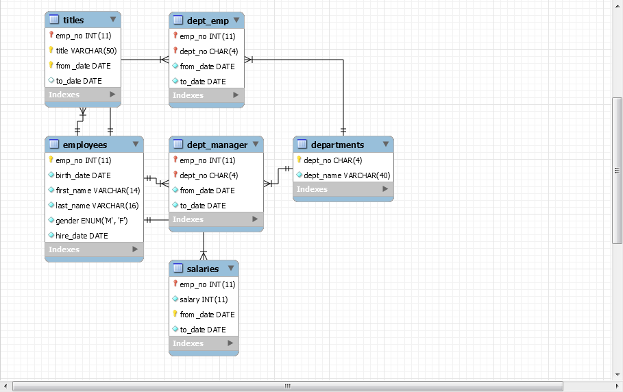
2. 最左前缀原理和相关优化
- 首先可以查看employees数据库titles都有哪些索引
SHOW INDEX FROM employees.titles;
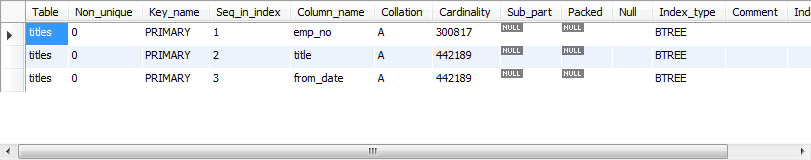 - 进行全列匹配的索引优化
EXPLAIN SELECT * FROM employees.titles WHERE emp_no=’10001’ AND title=’Senior Engineer’ AND from_date=’1986-06-26’;
很明显，当按照索引中所有列进行精确匹配（这里精确匹配指“=”或“IN”匹配）时，索引可以被用到。这里有一点需要注意，理论上索引对顺序是敏感的，但是由于MySQL的查询优化器会自动调整where子句的条件顺序以使用适合的索引，例如我们将where中的条件顺序颠倒：
EXPLAIN SELECT * FROM employees.titles WHERE from_date=’1986-06-26’ AND emp_no=’10001’ AND title=’Senior Engineer’;
结果是一样的。
- 最左前缀匹配
EXPLAIN SELECT * FROM employees.titles WHERE emp_no=’10001’;
当查询条件精确匹配索引的左边连续一个或几个列时，如<emp_no>或<emp_no, title>，所以可以被用到，但是只能用到一部分，即条件所组成的最左前缀。上面的查询从分析结果看用到了PRIMARY索引，但是key_len为4，说明只用到了索引的第一列前缀。
- 查询条件用到了索引中列的精确匹配，但是中间某个条件未提供。
EXPLAIN SELECT * FROM employees.titles WHERE emp_no=’10001’ AND from_date=’1986-06-26’;

此时索引使用情况和情况二相同，因为title未提供，所以查询只用到了索引的第一列，而后面的from_date虽然也在索引中，但是由于title不存在而无法和左前缀连接，因此需要对结果进行扫描过滤from_date（这里由于emp_no唯一，所以不存在扫描）。如果想让from_date也使用索引而不是where过滤，可以增加一个辅助索引<emp_no, from_date>，此时上面的查询会使用这个索引。除此之外，还可以使用一种称之为“隔离列”的优化方法，将emp_no与from_date之间的“坑”填上。
查看下title一共有几种不同的值：
SELECT DISTINCT(title) FROM employees.titles;
在这种成为“坑”的列值比较少的情况下，可以考虑用“IN”来填补这个“坑”从而形成最左前缀：
EXPLAIN SELECT * FROM employees.titles
WHERE emp_no=’10001’
AND title IN (‘Senior Engineer’, ‘Staff’, ‘Engineer’, ‘Senior Staff’, ‘Assistant Engineer’, ‘Technique Leader’, ‘Manager’)
AND from_date=’1986-06-26’;
这次key_len为59，说明索引被用全了，但是从type和rows看出IN实际上执行了一个range查询，这里检查了7个key。看下两种查询的性能比较：
SHOW PROFILES(这句话的开启具体见这里);
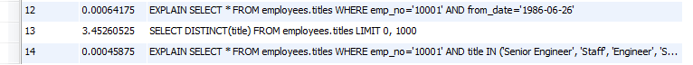
“填坑”后性能提升了一点。如果经过emp_no筛选后余下很多数据，则后者性能优势会更加明显。当然，如果title的值很多，用填坑就不合适了，必须建立辅助索引。
- 查询条件没有指定索引第一列。
EXPLAIN SELECT * FROM employees.titles WHERE from_date=’1986-06-26’;
由于不是最左前缀，索引这样的查询显然用不到索引。
- 匹配某列的前缀字符串。
EXPLAIN SELECT * FROM employees.titles WHERE emp_no=’10001’ AND title LIKE ‘Senior%’;
此时可以用到索引，如果通配符%不出现在开头，则可以用到索引，但根据具体情况不同可能只会用其中一个前缀。
- 范围查询。
EXPLAIN SELECT * FROM employees.titles WHERE emp_no < ‘10010’ and title=’Senior Engineer’;
范围列可以用到索引（必须是最左前缀），但是范围列后面的列无法用到索引。同时，索引最多用于一个范围列，因此如果查询条件中有两个范围列则无法全用到索引。
EXPLAIN SELECT * FROM employees.titles
WHERE emp_no < ‘10010’
AND title=’Senior Engineer’
AND from_date BETWEEN ‘1986-01-01’ AND ‘1986-12-31’;
可以看到索引对第二个范围索引无能为力。这里特别要说明MySQL一个有意思的地方，那就是仅用explain可能无法区分范围索引和多值匹配，因为在type中这两者都显示为range。同时，用了“between”并不意味着就是范围查询，例如下面的查询：
EXPLAIN SELECT * FROM employees.titles
WHERE emp_no BETWEEN ‘10001’ AND ‘10010’
AND title=’Senior Engineer’
AND from_date BETWEEN ‘1986-01-01’ AND ‘1986-12-31’;
看起来是用了两个范围查询，但作用于emp_no上的“BETWEEN”实际上相当于“IN”，也就是说emp_no实际是多值精确匹配。可以看到这个查询用到了索引全部三个列。因此在MySQL中要谨慎地区分多值匹配和范围匹配，否则会对MySQL的行为产生困惑。
- 查询条件中含有函数或表达式。
EXPLAIN SELECT * FROM employees.titles WHERE emp_no=’10001’ AND left(title, 6)=’Senior’;
虽然这个查询和情况五中功能相同，但是由于使用了函数left，则无法为title列应用索引，而情况五中用LIKE则可以。再如：
EXPLAIN SELECT * FROM employees.titles WHERE emp_no - 1=’10000’;
显然这个查询等价于查询emp_no为10001的函数，但是由于查询条件是一个表达式，MySQL无法为其使用索引。看来MySQL还没有智能到自动优化常量表达式的程度，因此在写查询语句时尽量避免表达式出现在查询中，而是先手工私下代数运算，转换为无表达式的查询语句。
3.如何选择索引和使用前缀索引
如何建立索引可以根据一条公式决定：
Index Selectivity = Cardinality / #T
其中Selectivity是索引的选择性指数，显然范围在（0,1]之间，Cardinality是指不重复的数据，也叫基数，#T是表的记录数，选择性指数越高建立索引的价值就越高（由B+Tree的性质决定的）；可以验证上面employees.titles表的title字段选择性指数数值：
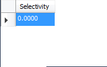
title的选择性不足0.0001（精确值为0.00001579），所以实在没有什么必要为其单独建索引。
可以多试几个数据，比如employees.salaries表的salary字段：
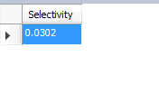
有一种与索引选择性有关的索引优化策略叫做前缀索引，就是用列的前缀代替整个列作为索引key，当前缀长度合适时，可以做到既使得前缀索引的选择性接近全列索引，同时因为索引key变短而减少了索引文件的大小和维护开销。下面以employees.employees表为例介绍前缀索引的选择和使用。
查询employees表的索引可得：
SHOW INDEX FROM employees.employees;
只有主键emp_no一个索引，搜索人名比较麻烦,做全表扫描:
EXPLAIN SELECT * FROM employees.employees WHERE first_name=’Eric’ AND last_name=’Anido’;
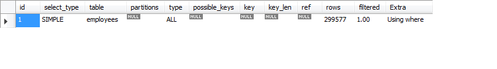
如果频繁按名字搜索员工，这样显然效率很低，因此我们可以考虑建索引。有两种选择，建<first_name>或<first_name, last_name>，看下两个索引的选择性：
SELECT count(DISTINCT(first_name))/count(*) AS Selectivity FROM employees.employees;
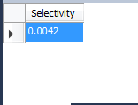
SELECT count(DISTINCT(concat(first_name, last_name)))/count(*) AS Selectivity FROM employees.employees;
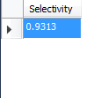
<first_name, last_name>选择性很好，但是first_name和last_name加起来长度为30,可以考虑用first_name和last_name的前几个字符建立索引，例如<first_name, left(last_name, 3)>，看看其选择性：
SELECT count(DISTINCT(concat(first_name, left(last_name, 3))))/count(*) AS Selectivity FROM employees.employees;
可以尝试把last_name前缀加到4：
SELECT count(DISTINCT(concat(first_name, left(last_name, 4))))/count(*) AS Selectivity FROM employees.employees;
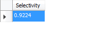
这时选择性已经很理想了，而这个索引的长度只有18，比<first_name, last_name>短了接近一半，我们把这个前缀索引 建上：
ALTER TABLE employees.employees
ADD INDEX `first_name_last_name4` (first_name, last_name(4));
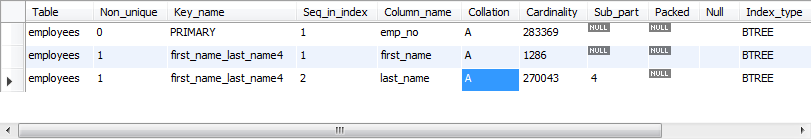
SHOW PROFILES;
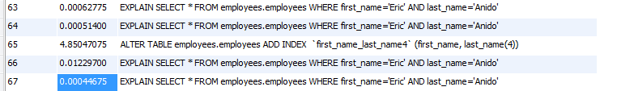
前缀索引兼顾索引大小和查询速度，但是其缺点是不能用于ORDER BY和GROUP BY操作，也不能用于Covering index（即当索引本身包含查询所需全部数据时，不再访问数据文件本身）。